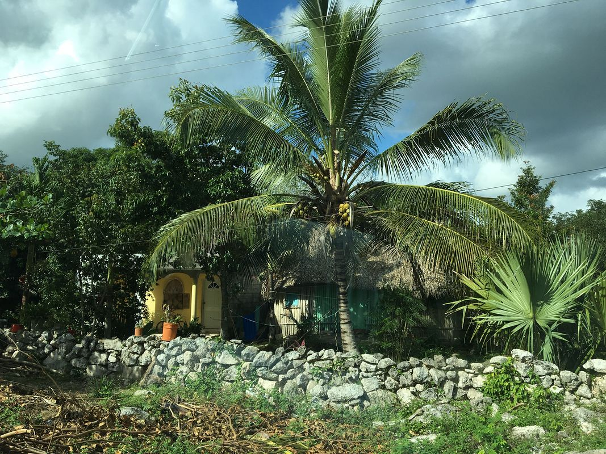

宿
标题：尤卡坦半岛的美丽民宿
作者: Dr-Eam
- 
我和闺蜜两个人儿在尤卡坦半岛租车绕了小半圈，因为自己开车的关系，选酒店非常自由，从茅草房到
生态酒店，住了5个各具特色的酒店/民宿。不得不说，我对这5个酒店都非常满意，感觉是旅行的又一道风景线，每一天，我都会先介绍住的酒店，因为居住体验实在是很好。
这么说吧，如果我结婚，度蜜月我还是会选择回这里来，因为民风热情，大街上走的人都很开心，到处都是唱歌跳舞喝酒的人，建筑的颜色也都非常的活泼，是一个会让人笑而不是感伤的地方。
我们是圣诞旺季去的，物价门票租车都很贵，全部和美国一个价。开车很安全，高速收费，但是很便宜，又保养的很好，非常适合自驾游，我们中间去科巴古城的时候还开了大概两小时乡路，对面的司机呀，经过的摩托呀，看到我们两个“小姑娘”开车都要回头看。中途停下在一个村里买了可乐和零食，感觉全村的人都在看我。
大家都很友好，虽然语言不通，但是借厕所，要热水，问路，各种事情也都比比划划的完成了。
任何东西都可以讲价，我会给出我的门票和租车的价格做参考，我个人不擅长讲价，所以我给的价格应该都是比较贵的···墨西哥就像国内，遇事要机灵，像美国一样傻等着就不行。比如我们刚到坎昆机场，就发现租车公司的车太少，我们租的车被别人拿走了（我们没有提前付款）。有人选择了等，我们拉着行李就出了机场，去别的租车公司讲价，跑来跑去，折腾了一个小时，终于200刀拿下了5天，凯美瑞新车全保还是不错的。门票也是如此，潜水也是一样。都是要讲价的。
again，墨西哥人民比较开放，随意，在海滩旁边就更是这样了。海滩上吹口哨的，告诉你免费带你潜水的，跑来合影的，要电话的，约喝酒的，等等都非常常见，大家不要害怕，礼貌拒绝就好。
我建议大家住在卡门海滩而不是坎昆，因为卡门海滩明显年轻人多很多，热闹，有活力。坎昆物价高，商业气息更浓一点，somehow海滩上美国老头老太太也比较多。
强烈推介Xel-ha
X-plore两个游乐场，我是很贵的门票160刀去的，但是非常满意。Xelha是浮潜主题的，把加勒比海水引进来做了很多美丽的浮潜site， 可惜我们高度近视眼去不了。于是选择了X-plore， 这里的主题是探险，划索，地下河游泳，溶洞皮划艇，丛林越野车，包吃包喝，食物也非常的有诚意，服务态度非常好，设施非常专业，确保了游客的安全，我给100分。
这里是旅游胜地，玩个十天不成问题，我们时间紧，只呆了5天，还是有很多遗憾的。
这么说吧，如果我结婚，度蜜月我还是会选择回这里来，因为民风热情，大街上走的人都很开心，到处都是唱歌跳舞喝酒的人，建筑的颜色也都非常的活泼，是一个会让人笑而不是感伤的地方。
我们是圣诞旺季去的，物价门票租车都很贵，全部和美国一个价。开车很安全，高速收费，但是很便宜，又保养的很好，非常适合自驾游，我们中间去科巴古城的时候还开了大概两小时乡路，对面的司机呀，经过的摩托呀，看到我们两个“小姑娘”开车都要回头看。中途停下在一个村里买了可乐和零食，感觉全村的人都在看我。
大家都很友好，虽然语言不通，但是借厕所，要热水，问路，各种事情也都比比划划的完成了。
任何东西都可以讲价，我会给出我的门票和租车的价格做参考，我个人不擅长讲价，所以我给的价格应该都是比较贵的···墨西哥就像国内，遇事要机灵，像美国一样傻等着就不行。比如我们刚到坎昆机场，就发现租车公司的车太少，我们租的车被别人拿走了（我们没有提前付款）。有人选择了等，我们拉着行李就出了机场，去别的租车公司讲价，跑来跑去，折腾了一个小时，终于200刀拿下了5天，凯美瑞新车全保还是不错的。门票也是如此，潜水也是一样。都是要讲价的。
again，墨西哥人民比较开放，随意，在海滩旁边就更是这样了。海滩上吹口哨的，告诉你免费带你潜水的，跑来合影的，要电话的，约喝酒的，等等都非常常见，大家不要害怕，礼貌拒绝就好。
我建议大家住在卡门海滩而不是坎昆，因为卡门海滩明显年轻人多很多，热闹，有活力。坎昆物价高，商业气息更浓一点，somehow海滩上美国老头老太太也比较多。
强烈推介Xel-ha
X-plore两个游乐场，我是很贵的门票160刀去的，但是非常满意。Xelha是浮潜主题的，把加勒比海水引进来做了很多美丽的浮潜site， 可惜我们高度近视眼去不了。于是选择了X-plore， 这里的主题是探险，划索，地下河游泳，溶洞皮划艇，丛林越野车，包吃包喝，食物也非常的有诚意，服务态度非常好，设施非常专业，确保了游客的安全，我给100分。
这里是旅游胜地，玩个十天不成问题，我们时间紧，只呆了5天，还是有很多遗憾的。